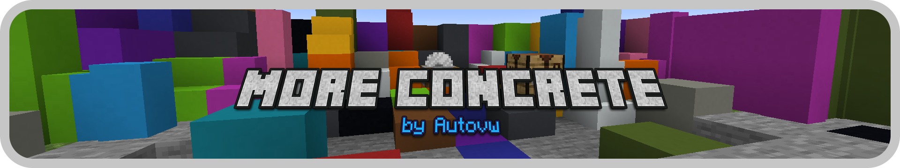

About me
Hello! I am Autovw (Auto for short) and I make Minecraft mods and other cool things!
I have experience with programming in the Java programming language, and I'm always trying to learn and improve while doing this.
Follow me on my socials or join my Discord server if you want to stay updated on whatever I'm currently doing.
Socials
News
16/1/2022

Advanced Netherite has reached 500.000 downloads on CurseForge!
8/11/2021

New mod More Concrete is now available!
Recent update(s)
Advanced Netherite 1.10.0
Versions:
1.18.1, 1.17.1, 1.16.5
Modloader:
Forge
Changelog:
- ✨ Client-side option to enable matching durability bars
- ✨ Complete new system for add-ons
- ✨ Introduced new datagen system
- ⚡ Improved add-on support
- üáßüá∑ Added pt_br translation (Thanks Uncle-Tio)
- üá∑üá∫ Added ru_ru translation (Thanks Slavik.art)
- üêõ Fixed advancements unlocking when picking up a random item (1.16.X)